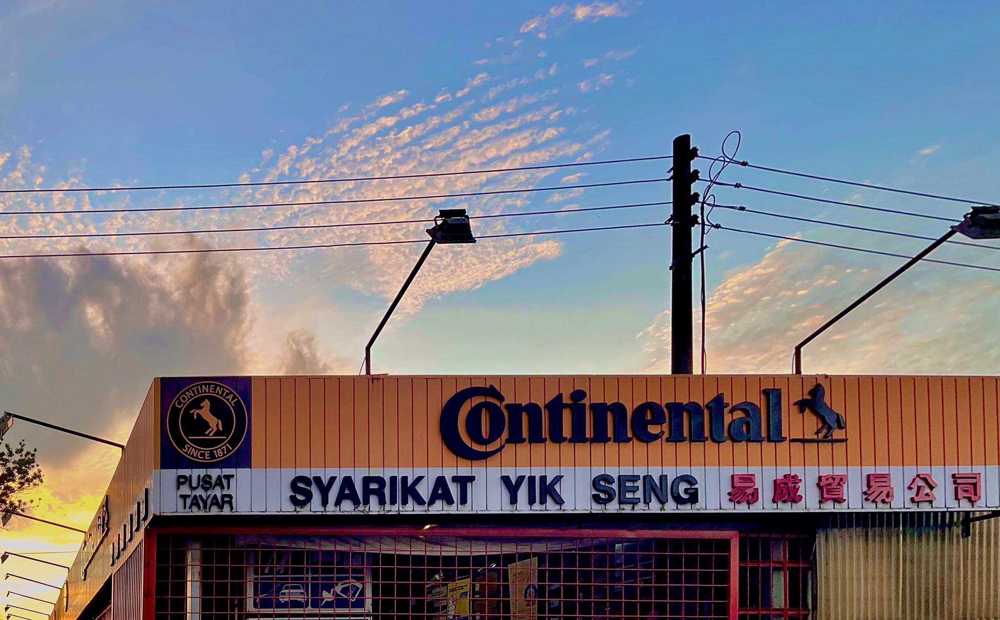

Passenger Cars
Small cars and sedans for daily driving.
TYRES · RIMS · SERVICE · PARTS
We help you find the right tyres, rims and automotive solutions for your drive.

We specialise in tyres and rims, while also providing practical automotive servicing, parts and battery solutions. If you're not sure what fits your car, send us a photo or drop us a message — we'll help you work it out.
Different cars, different needs. We carry tyre options across everyday driving, SUVs, sports cars and tougher 4x4 applications.
Small cars and sedans for daily driving.

Tyres for SUVs, performance-oriented cars and premium fitments.
Options for daily 4x4 use, longer trips and demanding roads.
We also carry other tyre brands including Goodyear, Michelin, Pirelli, Leao, Westlake, RoadX and more. Availability varies by size and application.
Send us a photo of your current tyre or tell us your car model. We'll help you check.
From everyday upgrades to a more distinctive setup, we help you choose rims that suit your vehicle and fitment.
Wheel size, width, offset and centre bore all matter. If you're unsure, come by and let us help you check the setup.
Practical automotive support for routine maintenance, replacement parts and the things your car needs along the way.
Hunter wheel alignment equipment to help get your wheels properly aligned.
Hunter balancing equipment for a smoother, properly balanced wheel setup.
Routine oil service and general maintenance for your vehicle.
Replacement parts and automotive components for different vehicle needs.
Parts support for selected European vehicles and applications.
GP and Motolite batteries, subject to vehicle application and availability.

Our Hunter wheel alignment and balancing equipment gives us the tools to check and service your wheel setup with greater precision.

Syarikat Yik Seng was established in 1993 and has grown alongside the automotive needs of Kuching. Today, tyres and rims remain at the heart of what we do, supported by servicing, parts, batteries, wheel alignment and balancing.
We're here for the simple things too — helping you find the right size, checking fitment, explaining your options and getting you back on the road.
28A, Rubber Road
93400 Kuching, Sarawak
No. 10, Lot 3580, Taman Midway Crescent
Jalan Kuching-Samarahan Expressway
94300 Kota Samarahan, Sarawak
Send us your tyre size, car model or simply a photo of your current tyre.
WhatsApp Syarikat Yik Seng